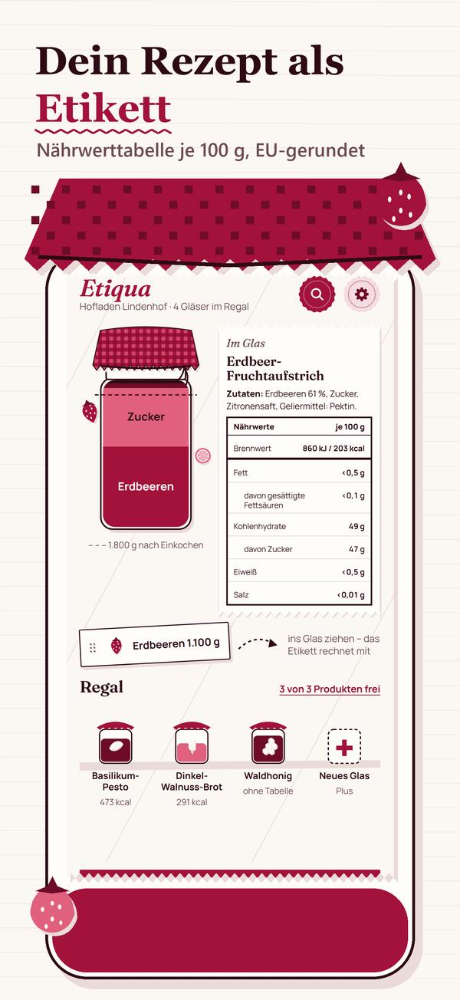
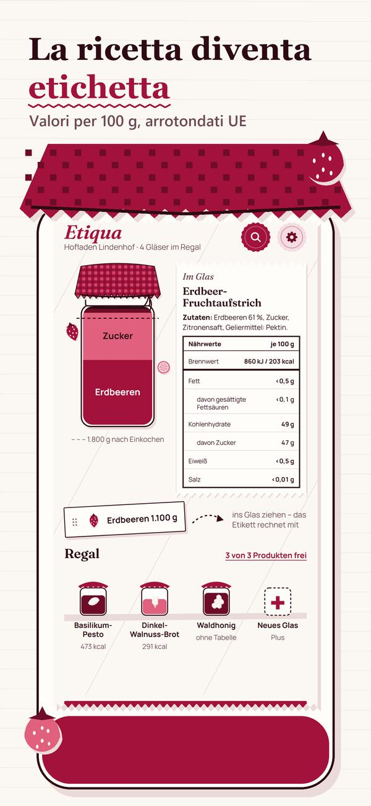
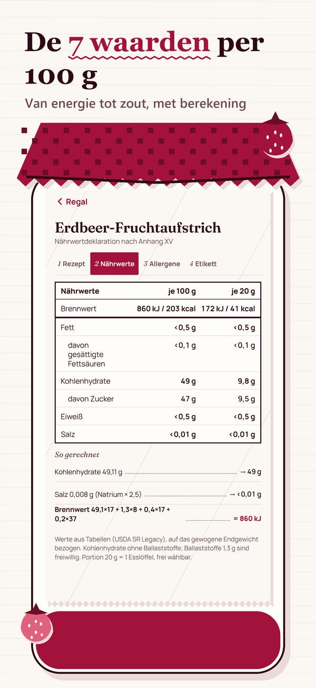
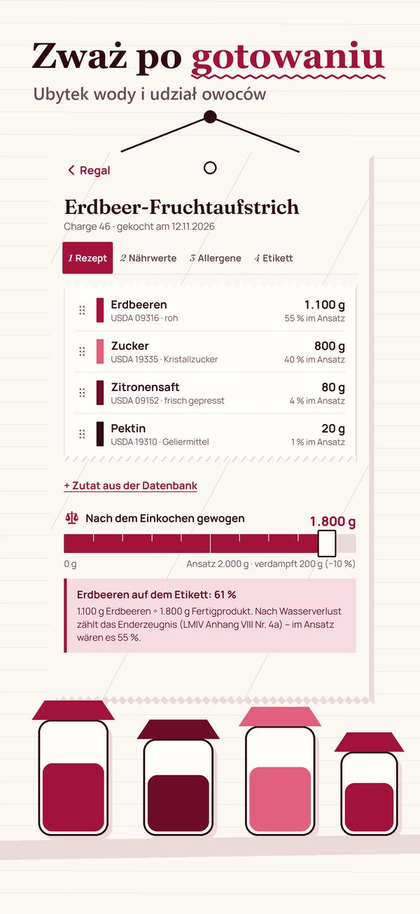
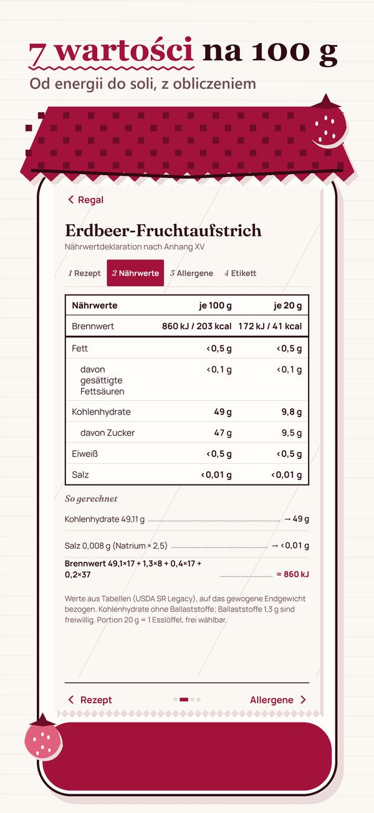

Etiqua rechnet für Hofladen, Imkerei, Backstube und Marktstand die Nährwerttabelle nach Lebensmittelinformationsverordnung aus deinem Rezept. Zutaten und Gramm eingeben, nach dem Einkochen oder Backen wiegen – Etiqua bezieht alles auf das fertige Produkt, ordnet die Zutaten nach Gewicht, rechnet den Fruchtanteil und druckt die 14 Hauptallergene fett. Die Nährwerte stammen aus offenen Lebensmitteltabellen, die in der App gespeichert sind.

Nährwerttabelle je 100 g und je Portion, Reihenfolge und Rundung nach EU-Leitfaden
Rezept mit Endgewicht: Wasserverlust beim Einkochen und Backen eingerechnet
Zutatenliste nach Gewicht mit Prozentangabe der namensgebenden Zutat
14 Hauptallergene erkannt und im Zutatenverzeichnis fett
Etikett mit Pflichtangaben, Mindesthaltbarkeit und Füllmenge; Druckbogen als PDF
Etiketten auf Deutsch, Französisch, Italienisch, Niederländisch und Polnisch
Eigene Zutaten vom Lieferantenetikett, auf Wunsch per Texterkennung
Regeln kurz erklärt: wann eine Tabelle nötig ist, Rundung, Toleranzen
Etiqua calcule pour la ferme, la miellerie, la boulangerie et le stand de marché la déclaration nutritionnelle selon le règlement INCO à partir de ta recette. Saisis les ingrédients et les grammes, pèse après cuisson : Etiqua rapporte tout au produit fini, classe les ingrédients par poids, calcule le pourcentage du fruit et met les 14 allergènes majeurs en gras. Les valeurs viennent de tables alimentaires ouvertes enregistrées dans l’app.
Tableau pour 100 g et par portion, ordre et arrondi selon le guide UE
Recette avec poids final : perte d’eau à la cuisson prise en compte
Liste des ingrédients par poids avec le pourcentage de l’ingrédient caractéristique
14 allergènes majeurs détectés et en gras dans la liste
Étiquette avec mentions obligatoires, DDM et quantité nette ; planche PDF
Étiquettes en français, allemand, italien, néerlandais et polonais
Ingrédients du fournisseur, avec reconnaissance de texte en option
Règles expliquées : quand un tableau est nécessaire, arrondi, tolérances
Etiqua calcola per agriturismo, apicoltura, forno e banco del mercato la dichiarazione nutrizionale secondo il regolamento UE sull’informazione alimentare, partendo dalla tua ricetta. Inserisci ingredienti e grammi, pesa dopo la cottura: Etiqua riferisce tutto al prodotto finito, ordina gli ingredienti per peso, calcola la percentuale di frutta e mette in grassetto i 14 allergeni. I valori provengono da tabelle alimentari aperte salvate nell’app.

Tabella per 100 g e per porzione, ordine e arrotondamento secondo la guida UE
Ricetta con peso finale: perdita d’acqua in cottura inclusa
Elenco ingredienti per peso con percentuale dell’ingrediente caratterizzante
14 allergeni principali riconosciuti e in grassetto
Etichetta con indicazioni obbligatorie, TMC e quantità netta; foglio PDF
Etichette in italiano, tedesco, francese, olandese e polacco
Ingredienti del fornitore, con riconoscimento del testo su richiesta
Regole in breve: quando serve la tabella, arrotondamento, tolleranze
Etiqua berekent voor boerderijwinkel, imkerij, bakkerij en marktkraam de voedingswaardetabel volgens de EU-verordening voedselinformatie, vanuit je recept. Vul ingrediënten en grammen in, weeg na het koken: Etiqua rekent alles naar het eindproduct, zet de ingrediënten op gewicht, berekent het fruitpercentage en zet de 14 allergenen vet. De waarden komen uit open voedingstabellen die in de app zijn opgeslagen.

Tabel per 100 g en per portie, volgorde en afronding volgens EU-richtsnoer
Recept met eindgewicht: vochtverlies bij koken en bakken meegerekend
Ingrediëntenlijst op gewicht met percentage van het kenmerkende ingrediënt
14 allergenen herkend en vet in de lijst
Etiket met verplichte vermeldingen, THT en netto-inhoud; PDF-vel
Etiketten in Nederlands, Duits, Frans, Italiaans en Pools
Eigen ingrediënten van het leveranciersetiket, met tekstherkenning
Regels kort: wanneer een tabel nodig is, afronding, toleranties
Etiqua oblicza dla gospodarstwa, pasieki, piekarni i stoiska na targu tabelę wartości odżywczej zgodnie z rozporządzeniem UE o informowaniu o żywności, na podstawie przepisu. Wpisz składniki i gramy, zważ po gotowaniu: Etiqua przelicza wszystko na produkt gotowy, układa składniki według masy, liczy udział owoców i pogrubia 14 alergenów. Wartości pochodzą z otwartych tabel żywności zapisanych w aplikacji.


Tabela na 100 g i na porcję, kolejność i zaokrąglenia wg wytycznych UE
Przepis z masą końcową: ubytek wody przy gotowaniu i pieczeniu
Wykaz składników według masy z procentem składnika charakterystycznego
14 alergenów rozpoznanych i pogrubionych
Etykieta z obowiązkowymi informacjami, datą i ilością netto; arkusz PDF
Etykiety po polsku, niemiecku, francusku, włosku i niderlandzku
Własne składniki z etykiety dostawcy, z rozpoznawaniem tekstu
Zasady w skrócie: kiedy tabela jest potrzebna, zaokrąglenia, tolerancje